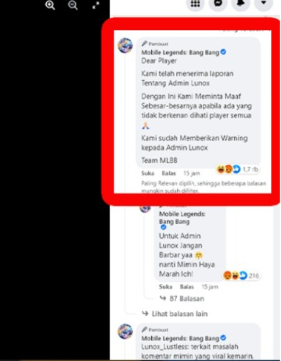
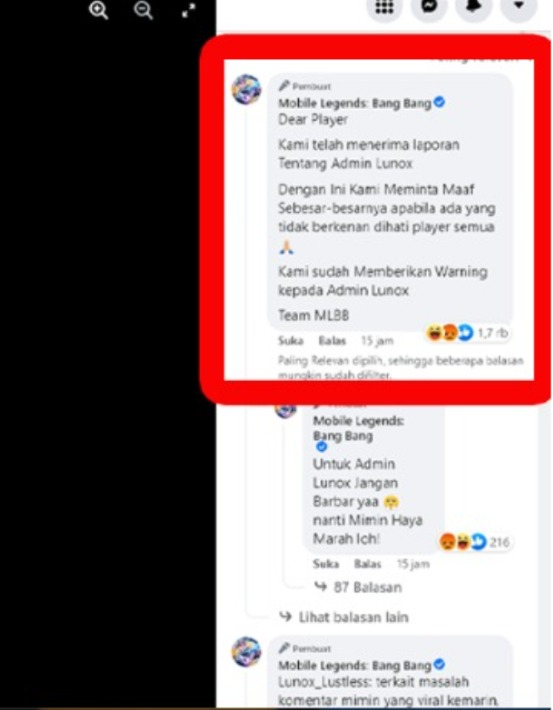

Sejarah Media Sosial
Perkembangan teknologi modern semakin cepat sejak Revolusi Industri, dimulai dengan mesin uap yang mengubah proses produksi. Pada Revolusi Industri kedua, hadir penemuan penting seperti telegraf, telepon, dan radio yang memajukan komunikasi jarak jauh. Memasuki abad ke-20, televisi dan komputer mempercepat transformasi teknologi. Tahun 1969 muncul ARPANET sebagai aeal mula internet, lalu standar TCP/IP pada 1983 memungkinkan jaringan global. Puncaknya, pada 1991 World Wide Web diperkenalkan sehingga internet menjadi mudah diakses oleh masyarakat luas. Media sosial berkembang setelah hadirnya World Wide Web. Platform pertama yang dianggap sebagai media sosial adalah SixDegrees.com (1997) yang memiliki fitur membuat profil pribadi, menambah teman, dan mengirim pesan. Pada awal 2000-an muncul media sosial yang lebih terstruktur seperti Friendster (2002), MySpace (2003), dan LinkedIn (2003). Tetapi karena keterbatasan fitur platform awal, mulai hadir media sosial besar seperti Facebook, YouTube, Twitter, dan Instagram yang menawarkan fungsi lebih luas dan menghubungkan pengguna secara lebih mudah. Setelah tahun 2010, dengan meningkatnya penggunaan ponsel, platform seperti WhatsApp, Snapchat, dan TikTok menjadi dominan dan semakin membentuk cara masyarakat berkomunikasi hingga saat ini.
Analisis Kasus: “Setelah Sindir Anak Yatim, Admin Mobile Legends Ungkap Permohonan Maaf”. Kasus ini bermula saat admin Facebook Mobile Legends Bang Bang (MLBB) Indonesia, Lunox_Lustless, menulis komentar “sok asik y-team”, yang merupakan ejekan merendahkan anak yatim. Akibat berasal dari akun resmi, tindakan tersebut mencerminkan tindakan publik sebagai perilaku tidak profesional dan tidak etis. Pihak MLBB Indonesia kemudian meminta maaf, menegaskan bahwa komentar itu adalah tindakan pribadi admin, serta menyatakan bahwa admin telah ditegur dan dilakukan evaluasi internal. Kasus ini menyoroti pentingnya profesionalisme dan kesadaran diri admin media sosial, serta meningkatnya isu cyberbullying. Dampaknya tidak hanya melukai korban, tetapi juga ikut menormalkan budaya ejekan di dunia digital, yang muncul karena budaya online sering membiarkan kritik kasar, candaan merendahkan, dan komentar tanpa empati dari pengguna yang merasa bebas bersembunyi di balik layar.
 
